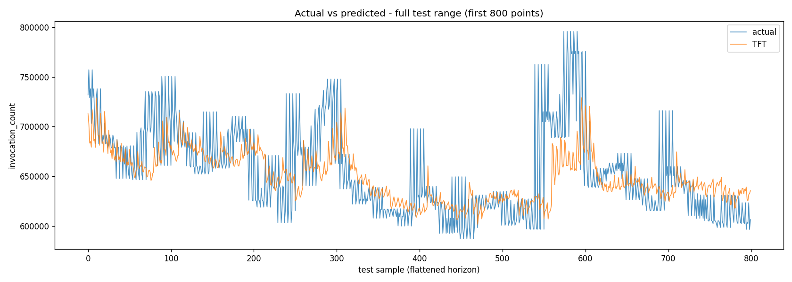
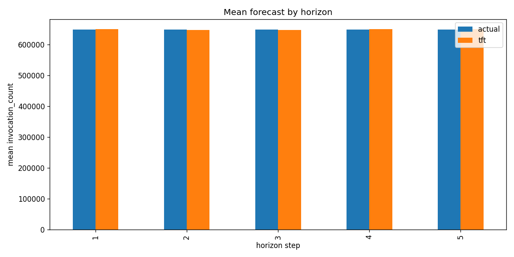
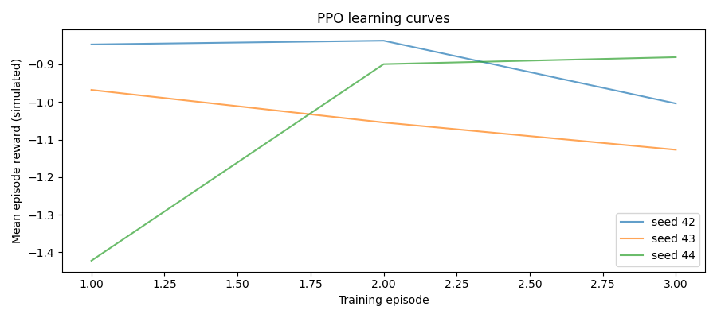
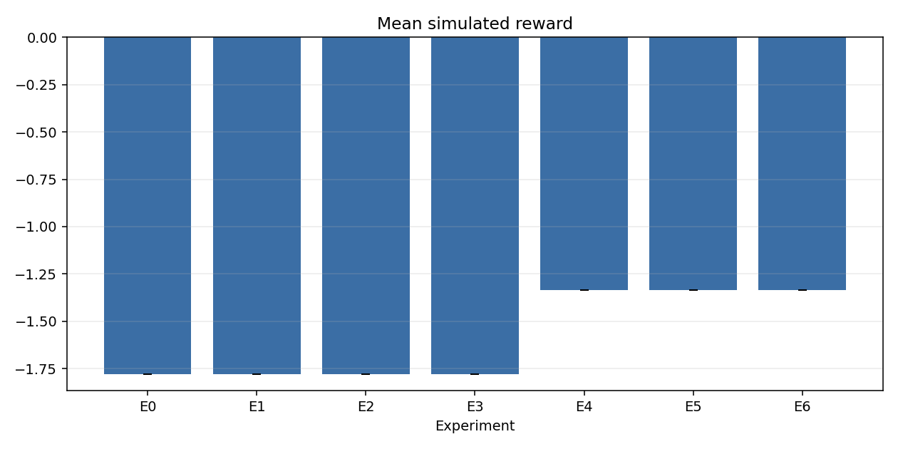
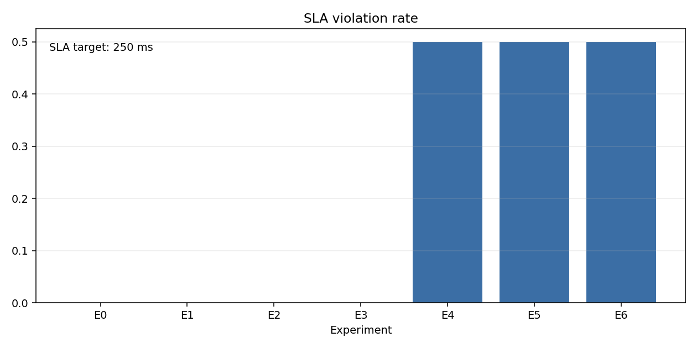

AI-Driven Decision Engine Dashboard
TFT + Qwen3 + PPO in one bounded control loop · implementation, evidence and live-use boundary
1. Executive summary
There is no single all-powerful AI model in this project. The decision engine is a set of bounded specialists: TFT predicts near-term workload, Qwen3 proposes a high-level strategy, PPO selects a concrete bounded action, and deterministic validators/shield decide what is actually allowed. The executor only runs an approved, authorized action.
| Component | Question it answers | How it works | Contract | Status |
|---|---|---|---|---|
| TFT workload forecaster | What workload is likely to arrive next? | Trained compact Transformer over historical invocation windows | history 30 → horizon 5 | trained / offline tested |
| Qwen3 planner | What high-level strategy should be considered? | Prompted LLM adapter with deterministic stub fallback; no fine-tuning | StateSnapshot → strict Plan | adapter only / real inference unavailable |
| PPO controller | What bounded action should be taken this cycle? | Actor-critic trained by clipped PPO in the simulator | float32[10] → action id 0-5 | smoke-trained / simulated |
TFT = perception/forecastQwen3 = advisory reasoningPPO = bounded controlShield = final authority
2. Closed-loop architecture
Code path: orchestrator/decision_loop.py:193 (DecisionLoop.decide) and orchestrator/decision_loop.py:372 (run_episode) wire the full cycle. Every cycle receives a correlation ID and writes a structured decision record.
3. What each AI component contributes
TFT: workload forecast
- Trained on chronological Azure Functions invocation windows; no shuffle.
- Input: 30 observed steps with 4 engineered features.
- Output: 5 predicted invocation counts, trend and source/fallback metadata.
- In the loop,
_tft_forecastbuilds the window and scales predictions; missing/stale/model-error inputs fall back to persistence. - It does not decide capacity and never touches infrastructure.
Qwen3: high-level planner
- Reads the bounded StateSnapshot and emits a strict JSON Plan.
- Strategies: NoOp, PreWarm, ScaleOut, Reuse, ScaleIn, Terminate.
- Default runtime is deterministic stub; Ollama adapter exists but real Qwen3 was unavailable.
- Plan is advisory and is validated before PPO sees it.
- Invalid, timeout, refusal, or unsafe output becomes stub fallback, then NoOp if still invalid.
PPO: bounded controller
- Actor-critic policy maps a 10-value observation to one of six action IDs.
- Reward penalizes energy, latency, cold starts, resources, underutilization, and SLA violations most heavily.
- Produces a proposal only; feedback may bias it, but the shield can override it.
- Evidence checkpoint is smoke-trained for 3 episodes/seed, not a converged production policy.
Deterministic guardrails
PlanValidator: schema, allowlist, direction, bounds and rate limits.ActionValidator: legal/authorized/plan-consistent action.SLAGuard: blocks risky scale-in/terminate near the SLA.SafetyShield: combines validator + guard and has final authority.Executor: disabled by default; no AI component can call it directly.
4. How the components hand off data
| Handoff | Input | Output | Consumer | Guard / boundary |
|---|---|---|---|---|
| Forecast → state | forecast dict + runtime metrics | StateSnapshot | DecisionLoop.decide | build_state validates/bounds fields |
| State → planner | StateSnapshot + untrusted metadata | Plan | DecisionLoop._safe_plan | PlanValidator + stub/NoOp fallback |
| State → PPO | normalized obs float32[10] | action id | DecisionLoop._select_action | policy.greedy_action or callable |
| Plan + PPO → shield | action, plan, authorized, P95 | final bounded action | SafetyShield.filter | ActionValidator + SLAGuard |
| Final action → environment/executor | action id + state + plan | step outcome or dry-run result | ServerlessEnv.step / Executor | execution.enabled=false by default |
| Outcome → monitoring | reward, SLA, energy proxy, cold starts | feedback/alerts/audit records | FeedbackLoop + AlertManager + DecisionLogger | append-only telemetry |
TFT output example
{
"forecast_horizon": 5,
"predicted_workload": [
520.0,
548.0,
571.0,
559.0,
603.0
],
"trend": "increasing",
"source": "tft",
"fallback": false,
"fallback_reason": null
}
Qwen3/Planner output example
{
"strategy": "ScaleOut",
"desired_capacity_change": 3,
"priority": "sla",
"urgency": "high",
"reason": "P95 is near SLA during forecast burst",
"constraints_respected": true
}
Final hierarchy record example
{
"forecast_source": "tft",
"planner_role": "advisory",
"controller_role": "proposal",
"shield_role": "final_authority",
"planner_strategy": "ScaleOut",
"proposed_action": 2,
"biased_action": 2,
"final_action": 2,
"final_action_name": "ScaleOut",
"guard_code": "ok",
"action_code": "ok",
"used_fallback": false,
"authorized": true
}
5. One decision cycle, step by step
- run_episode chooses a forecast: TFT checkpoint when available, otherwise persistence fallback.
- The simulator exposes runtime metrics and a normalized observation vector.
- build_state merges forecast + metrics into a strict StateSnapshot with forecast source metadata.
- _safe_plan calls the planner, falls back to stub, then to NoOp if validation still fails.
- The planner call record is captured with provider, model, prompt version, status and latency.
- _select_action asks PPO for a greedy action id; no policy means NoOp.
- _apply_feedback_bias may soften a risky action under caution, but never bypasses validation.
- SafetyShield.filter applies ActionValidator and SLAGuard; final action can become NoOp.
- Executor is optional and disabled by default; simulator step applies the final action.
- Outcome, decision, execution audit, alerts and feedback are logged for the next cycle.
Hierarchy recorded by the code: planner is advisory, controller is proposal, shield is final_authority. This is the key design decision that keeps the AI components from directly controlling infrastructure.
6. Learning and adaptation status
| Component | Learned weights? | Evidence source | Training / setup | Adaptation in runtime |
|---|---|---|---|---|
| TFT | Yes | Azure Functions 2019 invocation windows | 8 epochs, chronological split, seed 42 | No online training in the loop |
| Qwen3 | No | External model; no weights stored here | Prompt version planner-v2; safety tests only | Fallback to stub on timeout/refusal/invalid JSON |
| PPO | Yes (smoke) | Synthetic scenarios + scaled Azure trace segment | 3 episodes/seed; 3 seeds | Feedback only biases the decision; it does not retrain the policy |
Feedback is not online training. FeedbackLoop.signal() produces a caution signal used by _apply_feedback_bias; it may change a proposal from ScaleIn/Terminate to PreWarm/ScaleOut, but it does not update TFT, Qwen3, or PPO weights during the loop.
7. Safety and governance
| Boundary | Rule | Implementation |
|---|---|---|
| Planner output | Strict Pydantic Plan, extra fields forbidden, allowlisted strategies, bounded capacity change | agent/schemas.py, agent/validator.py |
| Qwen3 prompt | No shell/Kubernetes commands, metadata labelled untrusted, secret-like keys redacted | agent/prompts/planner.txt, agent/prompts/__init__.py |
| PPO output | Integer action id mapped to six fixed actions; no direct command capability | rl/environment.py, rl/policy.py |
| SLA guard | Blocks ScaleIn/Terminate when P95 ≥ 230 ms | orchestrator/sla_guard.py |
| Capacity bounds | min 2, max 30, change ≤ 5 per cycle | configs/project.yaml, validators |
| Execution gate | enabled=False, dry_run=True, allow_live=False | orchestrator/executor.py |
| Audit | Correlation ID links forecast, plan, PPO action, final action, execution and outcome | orchestrator/decision_log.py |
No component can emit arbitrary shell/Kubernetes commands. Planner metadata is treated as untrusted, telemetry is redacted, and execution remains gated by config plus authorization.
8. Evidence: component results
8.1 TFT forecast accuracy (offline test set)
| Model | Trained? | WAPE | MAPE | RMSE | Peak underprediction |
|---|---|---|---|---|---|
| TFT (trained) | Yes | 3.4092 | 3.3471 | 30540.0619 | 96.79% |
| Persistence | No | 4.1214 | 4.0492 | 37505.4707 | 83.68% |
| Seasonal persistence | No | 7.4763 | 7.4416 | 62602.0516 | 84.15% |
| Moving average | No | 3.8496 | 3.7792 | 34507.8907 | 93.24% |
TFT is the trained forecaster; the other rows are deterministic baselines on the same chronological test rows. Azure supplies invocation counts only; latency/energy are simulated elsewhere.
8.2 Qwen3 planner harness
| Metric | Stub runtime | Ollama runtime |
|---|---|---|
| Validity rate | 100.00% | 100.00% |
| Fallback rate | 0.00% | 100.00% |
| Mean latency | 0.01 ms | 4,043.89 ms |
| Strategies | NoOp, PreWarm, ScaleIn, ScaleOut | NoOp, PreWarm, ScaleIn, ScaleOut |
| Final actions | NoOp | NoOp |
The Ollama rows are fallback behavior: real Qwen3 inference was unavailable. Do not interpret them as Qwen3 planning quality.
8.3 PPO controller evaluation (simulation)
| Arm | Reward | SLA violation | Energy proxy | Capacity | Cold starts |
|---|---|---|---|---|---|
| fixed_noop | -1.1564 | 25.56% | 35.0000 | 2.0000 | 0.0000 |
| persistence_rule | -1.5315 | 4.44% | 227.8333 | 14.8556 | 1.2778 |
| ppo_shielded | -1.1564 | 25.56% | 35.0000 | 2.0000 | 0.0000 |
| reactive | -1.7725 | 5.56% | 222.5000 | 14.5000 | 2.1667 |
| trace_persistence_rule | -0.6384 | 0.00% | 35.0000 | 2.0000 | 0.0000 |
| trace_tft_rule | -0.6384 | 0.00% | 35.0000 | 2.0000 | 0.0000 |
The PPO arm is NoOp-like after the smoke training run. Rule/reactive arms reduce simulated SLA violations by using more capacity and energy.
8.4 Consolidated E0-E7 ablation smoke
| ID | Forecast | Planner | Controller | Reward | SLA | Energy | Status |
|---|---|---|---|---|---|---|---|
| E0 | none | rules | rules | -1.7786 | 0.00% | 166.2500 | ok |
| E1 | persistence | rules | rules | -1.7786 | 0.00% | 166.2500 | ok |
| E2 | tft | rules | rules | -1.7786 | 0.00% | 166.2500 | degraded tft fallback |
| E3 | tft | qwen3_stub | rules | -1.7786 | 0.00% | 166.2500 | degraded tft fallback,stub proxy |
| E4 | persistence | rules | ppo | -1.3351 | 50.00% | 35.0000 | ok |
| E5 | tft | rules | ppo | -1.3351 | 50.00% | 35.0000 | degraded tft fallback |
| E6 | tft | qwen3_stub | ppo | -1.3351 | 50.00% | 35.0000 | degraded tft fallback,stub proxy |
| E7 | selected | selected | selected | n/a | n/a | n/a | not run requires live cluster |
M8 smoke used one seed, four steps, mixed workload and --no-tft. E2/E3/E5/E6 are degraded TFT fallbacks; E3/E6 are stub proxies; E7 is deferred until a live cluster exists.
9. Generated evidence plots






10. Illustrative burst walkthrough
Illustrative values only — this is an explanation of the data path, not a measured experiment result.
11. What is implemented vs not validated
| Implemented and tested | Not validated / deferred |
|---|---|
| Data pipeline, chronological splits and Azure trace preprocessing | Live Prometheus scrape backed by deployed functions |
| TFT training/evaluation and forecast service with fallback | Live Grafana decisions from real system metrics |
| Qwen3 adapter, stub, fallback, prompt bounding and telemetry | Real Qwen3 model quality or latency |
| PPO environment, reward, training path, checkpoint and shield | Long multi-seed PPO convergence result |
| Decision loop, validators, audit, feedback and alerts | Live Kubernetes/OpenFaaS/Docker execution |
| M0-M9 simulated/dry-run integration | E7 live evaluation and measured energy/cold starts |
12. Reproduce the whole path
py -m scripts.evaluate_forecast --data-source azure_functions_2019 --out-dir results/forecast/azure2019_total --run-id azure2019_total_h30_h5 --epochs 8 py -m scripts.evaluate_planner --runtime stub --out-dir results/planner/stub py -m experiments.evaluate_ppo_m5 --out-dir results/ppo/m5 py -m orchestrator.decision_loop --steps 8 --policy checkpoint --use-tft py -m experiments.evaluate_m8 --out-dir results/evaluation/m8 --seeds 42 --steps 4 --scenarios mixed py -m scripts.generate_decision_engine_dashboard
Related detailed dashboards: TFT forecast dashboard, Qwen3 planner dashboard, PPO controller dashboard.